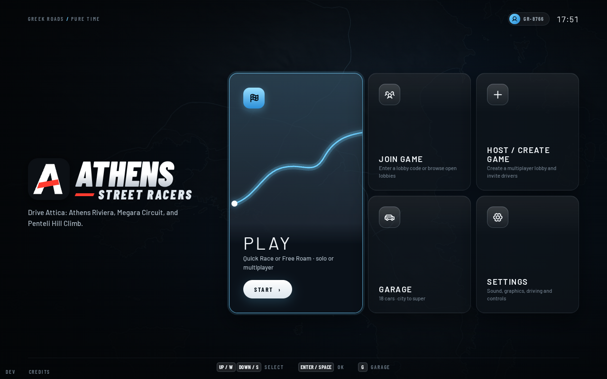
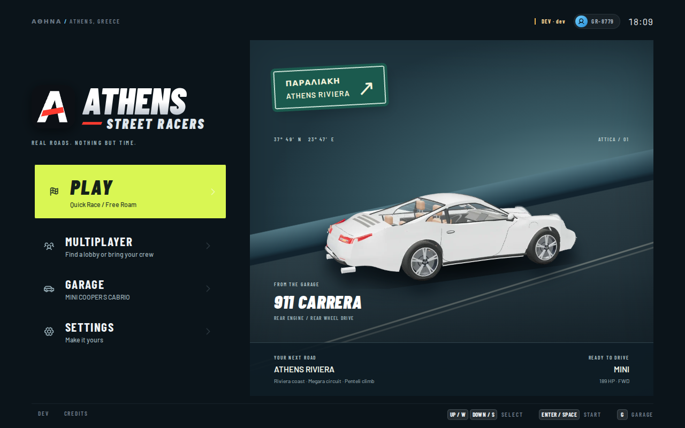
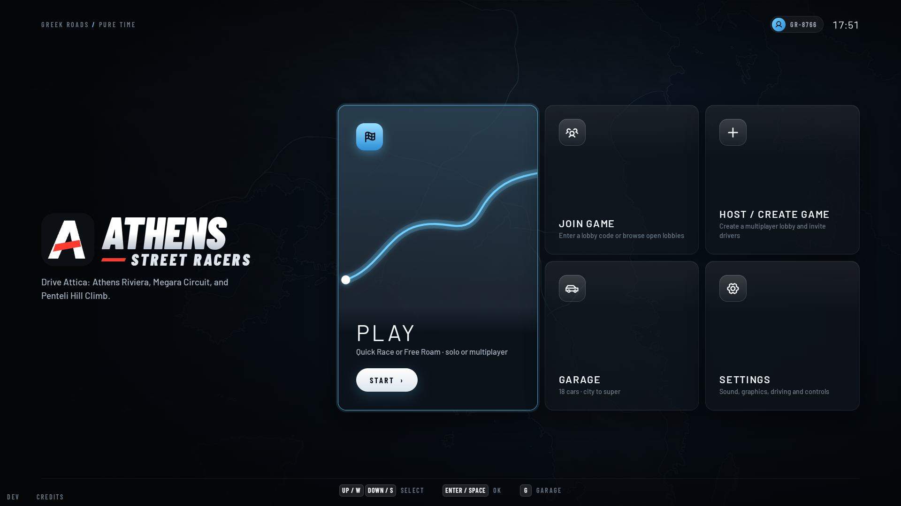
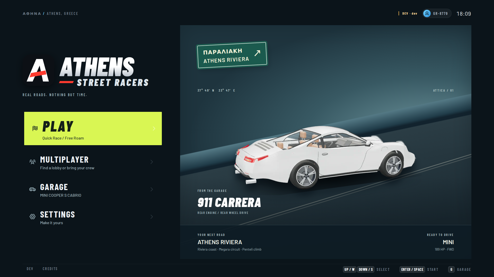
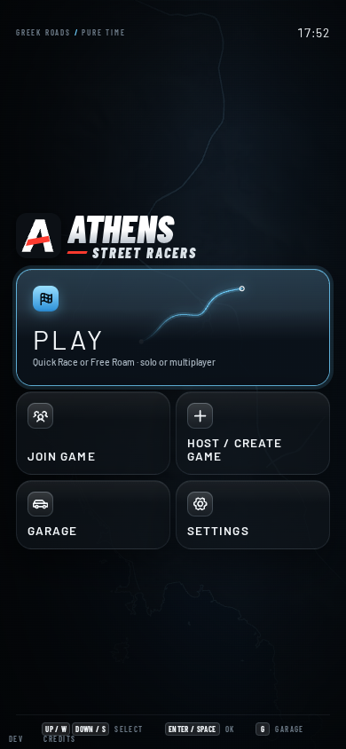
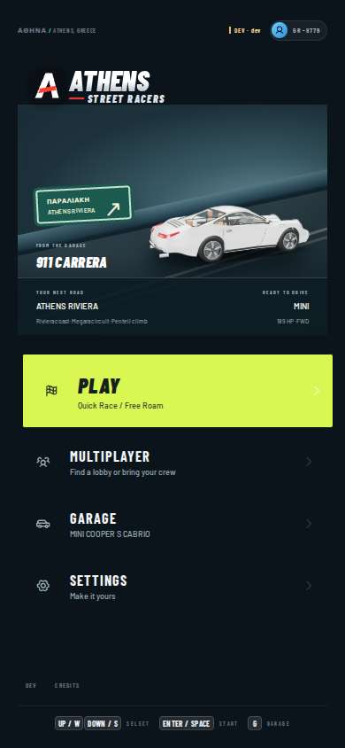

28 KB hero · zero boot worlds, geometries or game-renderer textures. Cold latency parity remains unverified under shared-host load. The featured car is static; a real Riviera cinematic would add more life.